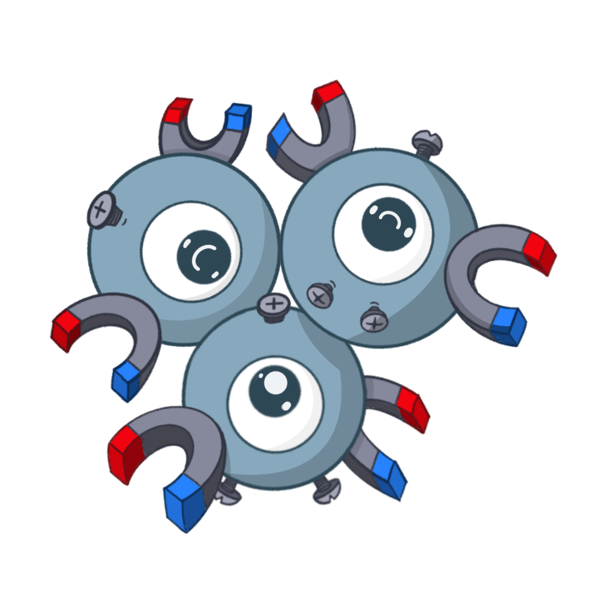
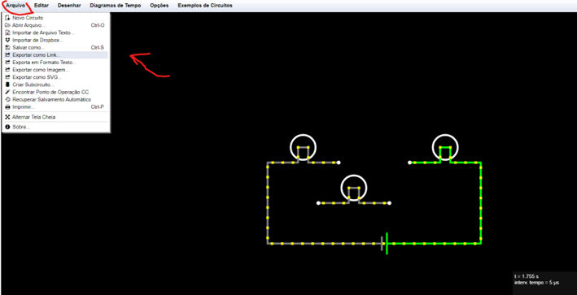
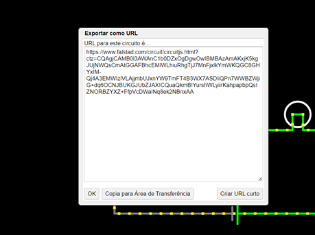

Circuitos Elétricos
O chatbot de Circuitos Elétricos foi desenvolvido para a turma de Eletrônica Básica, plataforma IBM Watson Assistant.
O magneton é composto por: Laboratório Reflexivo com algumas perguntas para exercício pessoal, vídeo para reforço contendo perguntas reflexivas, recomendação de conteúdo extra e informações de contato.
Caso tenha alguma dificuldade em relação a como utilizá-lo acesse no menu de navegação o item: instruções; ou no tutorial:o tutorial em: Tutorial Magneton
Dúvidas sobre o Laboratório
O laboratório virtual é escolhido pelo professor da disciplina qualquer dúvida sobre como utilizado, por favor entre em contato.
Uma possível dúvida que pode surgir é sobre como enviar o link das resoluções no laboratório falstad, para isso siga o tutorial a baixo:
Abrir a página como instruído pelo chatbot Magneton. Faça seus experimentos e após clique em "Arquivo” no canto superior esquerdo de sua tela. Irá abrir um menu e você deve clicar em: “Exportar como link...”.
Ao clicar, irá abrir uma nova página com um link. e basta você copiar a versão completa ou curta do link.
Obs: Para copiar a versão curta basta clicar em “Criar URL curto” e dar “OK”
Depois de realizar essas ações basta colar o link no Magneton, no campo onde foi solicitado.
Obs:: Você tem um tempo de no máximo 5 minutos para responder com o link. Pode ocorrer de caso você demore muito para voltar a interação com o magneton, neste momento, você tenha que reiniciar uma nova conversa. Tudo é teste!